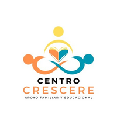

AgendarCentro integral para niños, jóvenes y adultos. Un equipo de profesionales que trabaja de manera coordinada para dar una atención personalizada, cercana y humana.
Agendar por WhatsAppTambién ofrecemos reforzamientos educativos, para fortalecer el aprendizaje y la autonomía.
Herramientas clave para un diagnóstico preciso y una intervención efectiva. Cada proceso es único.